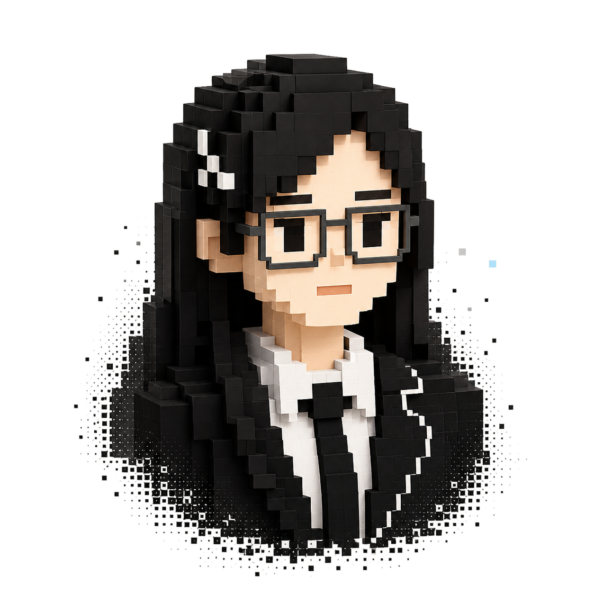
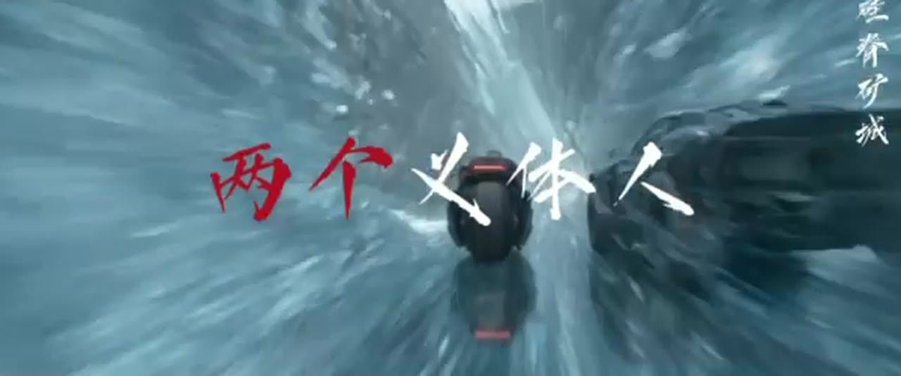
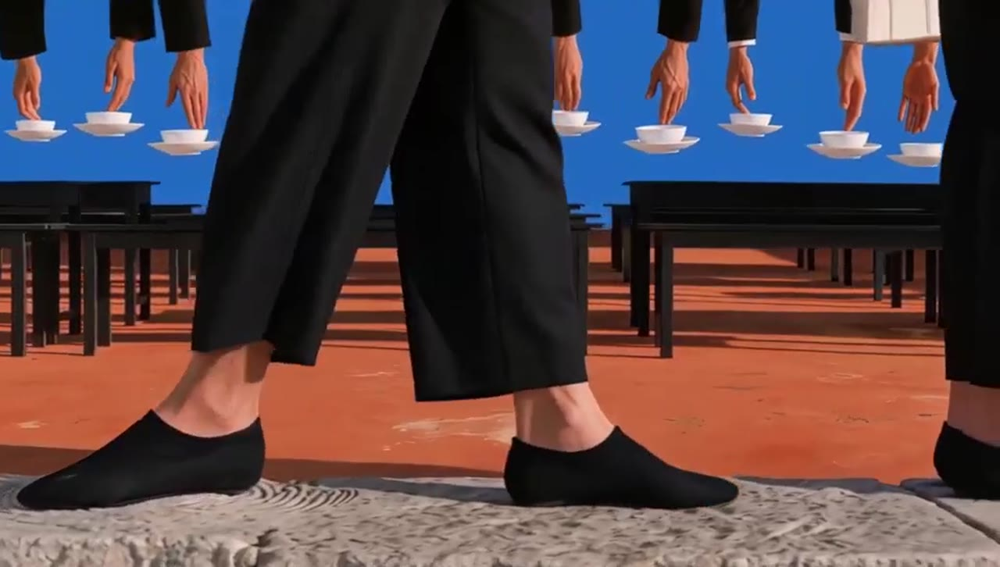
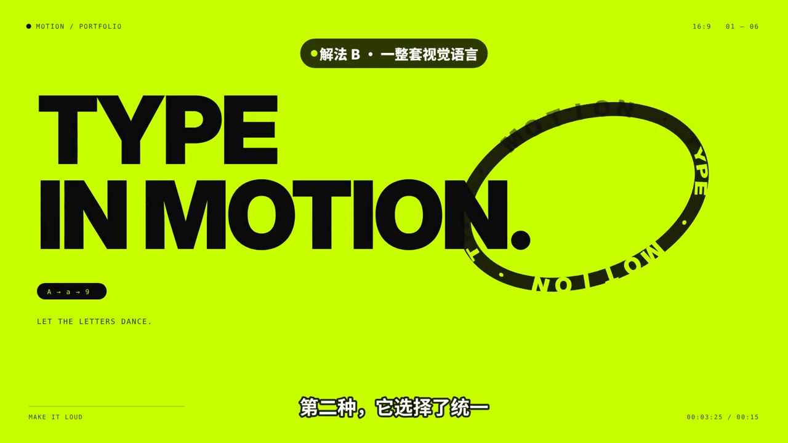
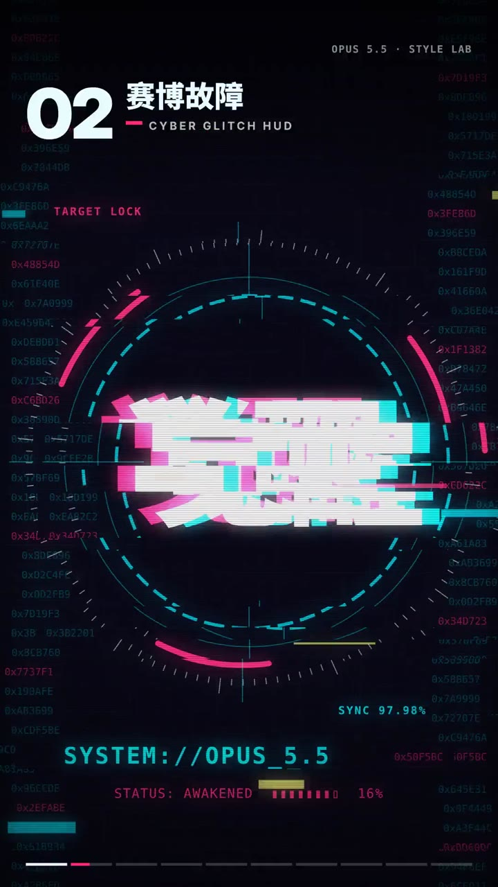
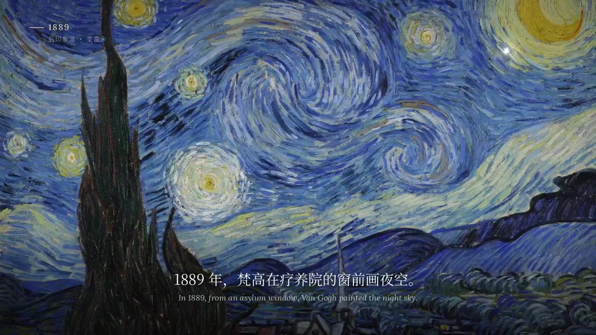
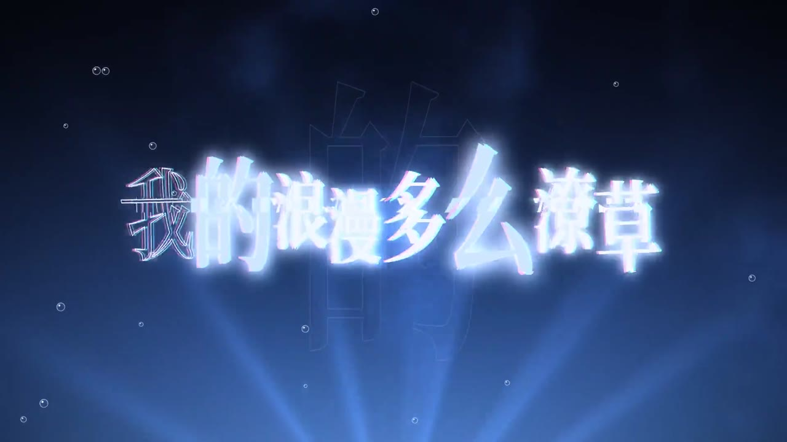

ABOUT / 关于
把创意变成
可协作、可上线的
内容系统。
张可欣 · AIGC 内容策略 / AI 产品设计
从内容生产，到产品化协作。
把选题、脚本、分镜与资产规范组织成可复用的生产路径。

AYAOPERSONAL IP · 在线
SCROLL TO TRACE
个人坐标 / PROFILE
先用审美判断方向，
再把创意组织成系统。
我从文化传播与管理出发，继续在艺术管理中研究内容、用户与产业之间的关系； 现在专注于 AIGC 内容策略与 AI 产品设计。
AI HONORS · 2025 — 2026
AI 创作上的 8 次被看见。
从影像大赛、设计奖到平台签约，作品在不同评审体系里得到了确认。
- 012026 KTK（靳埭强）设计奖AIGC 特邀单元 · 入围优秀作品2026
- 02新片场 Shotlab签约创作人XINPIANCHANG
- 03站酷 BATTLEVERSE 世界视频大赛优秀奖ZCOOL
- 04站酷薪火相传共创计划「火到站酷设计周」奖ZCOOL
- 05H3 · 帧美学艺术创作大赛入围展映奖 · 作品《帧茶馆》H3
- 06亚洲巅峰黑客松上海站70 强 · 参赛作品《竹》SHANGHAI
- 07Flova精选作者 · Max 超创FLOVA
- 08阿里巴巴公益潮玩设计征集大赛入围奖ALIBABA
AYAO 与原创 IP「佛小仙」是我验证方法的长期实验：让一个形象从设定、视觉、场景到应用持续生长。
AIGC STYLE LAB · 22 FILMS
风格不是滤镜，
是持续校准的观看方式。
NEW亚洲巅峰黑客松上海站 · 参赛作品

NEW

NEWH3 帧美学 · 入围展映奖
NEW
NEW
NEW
CODE-DRIVEN MOTION · VIBE 编程动效




STYLE STUDIES · 风格实验 01 — 11
AI 创作链 / METHOD
一次创作，
沉淀成可复用的能力。
0+完整设计产出
0%返工率降低
0+学员支持
0+艺术家作品评审
张可欣 · AIGC 内容策略 / AI 产品设计